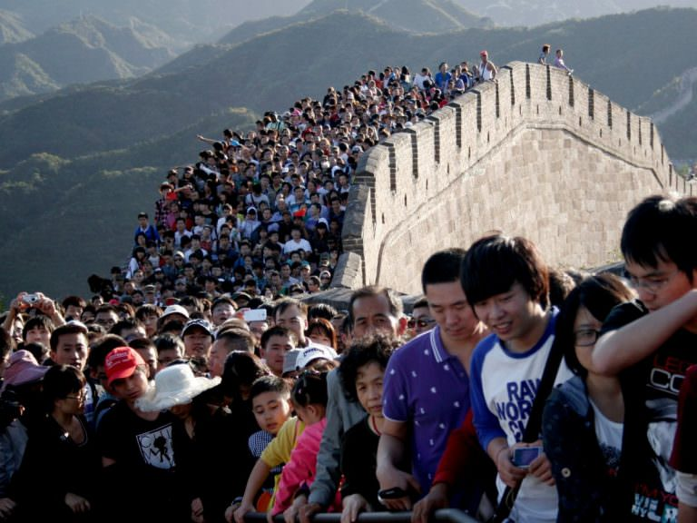

The 2 Most important messurments in Econmics
GDP:
GDP/C:
Gross Domestic Product (GDP) is the total market value of all final goods and services produced within a country during a specific period, serving as a key measure of economic activity.
GDP per capita is the total economic output (GDP) of a country divided by its population, showing the average economic production or income per person.
In summery: you need to make your GDP and GDP/C as high as possible to have the strongest Economy possible
How to Raise GDP:
1: productivity
Economic growth is largely driven by productivity, which is the efficiency of producing goods and services. Countries can increase productivity by investing in physical capital such as factories, machinery, and technology, and in human capital through education, vocational training, and skill development programs. Improved productivity allows more output with the same resources, directly raising GDP levels
2. Investments
Promote Investment
Encouraging both domestic and foreign investment is crucial. Governments can offer tax incentives, subsidies, or favorable regulations to attract businesses and stimulate capital formation. Investment in research and development (R&D) fosters innovation, leading to new products, services, and industries that expand economic output
3. Develop Infrastructure
Investing in infrastructure such as roads, bridges, ports, energy, and broadband networks enhances efficiency, reduces transportation costs, and facilitates trade. Improved infrastructure also creates jobs and supports private sector growth, contributing to higher GDP

4. Encourage Trade and Exports
Expanding exports and improving trade competitiveness can increase national income. Policies like currency devaluation, trade agreements, and export incentives can make domestic goods more attractive internationally, boosting GDP
5. Support Population and Labor Growth
A growing, skilled workforce contributes to higher production and consumption. Policies that improve healthcare, education, and labor participation can enhance the quantity and quality of labor, supporting long-term GDP growth

Know your competition: Knowing what countries have the Highest GDP is very helpful to either know what the standard is or what to learn from them.
Country:
GDP:
USA
$32.64 Trillion
China
$21.55 Trillion
Germany
$5.47 Trillion
Japan
$4.34 Trillion
United Kingdom (UK)
$4.27 Trillion
India
$4.06 Trillion
France
$3.55 Trillion
Russia
$2.86 Trillion
Italy
$2.70 Trillion
Brazil
$2.65 Trillion
How to Raise GDP/C (GDP per capita)
1. Education:
Education is one of the most effective ways to increase per capita GDP. Educated individuals have higher earning potentials, and a well-educated workforce is essential for a country's economic growth. Countries that invest in education, such as Finland and South Korea, have seen significant increases in their per capita GDP.
2. Infrastructure:
A country's infrastructure, including transportation, communication, and energy systems, is vital for economic growth. Countries that have invested in infrastructure, such as China, have seen substantial increases in their per capita GDP. For example, the construction of new highways and railways can increase economic activity by reducing transportation costs and increasing access to markets.
3. Innovation and Technology:
Innovation and technology are key drivers of economic growth. Countries that invest in research and development, such as the United States and Japan, have seen significant increases in their per capita GDP. For example, the development of new technologies, such as renewable energy and artificial intelligence, can create new industries and jobs, driving economic growth.
4. Trade:
International trade can increase a country's per capita GDP by increasing access to markets and resources. Countries that engage in trade, such as Singapore and Hong Kong, have seen significant increases in their per capita GDP. For example, exporting goods and services can increase a country's income, while importing goods and services can increase access to resources and reduce costs.
Why is GDP/C Important?:
Increasing per capita GDP is crucial in bridging the gap in income inequality. Countries can implement several strategies, including education, infrastructure, innovation and technology, and trade, to increase their per capita GDP and improve the standard of living of their citizens.
Know your competition:
Knowing what countries have the Highest GDP is very helpful to either know what the standard is or what to learn from them.
Country:
GDP/C:
Monaco
$288,000
Liechtenstein
$230,000
Luxembourg
$155,000
Bermuda
$142,000
Ireland
$127,000
Switzerland
$124,000
Norway
$115,000
Singapore
$109,000
Iceland
$107,000
Cayman Islands
$104,000
Disclaimer: These countries have really small population fixing wealth inequality much easier for them.
What NOT to do when Increasing GDP or GDP/C
1: Resource Curse:
Countries with abundant natural resources often experience economic stagnation, increased poverty, and political instability, known as the Resource Curse. This happens when you over rely on selling or exporting resources as your only source of income
2: Corruption:
Corruption reduces economic growth by lowering tax revenues, distorting public spending, discouraging investment, and weakening institutions; globally, it is estimated to cost about 5% of world GDP (roughly US$5.75 trillion).
3: Growing GDP too fast
Despite this guide saying to make the GDP as big as possible to have a strong econonmy, growing it too fast can cause inflation which can make consumer good more expensive
there is a lot of wrong ways to increase your GDP or GDP/C but these are the main things to look out for.